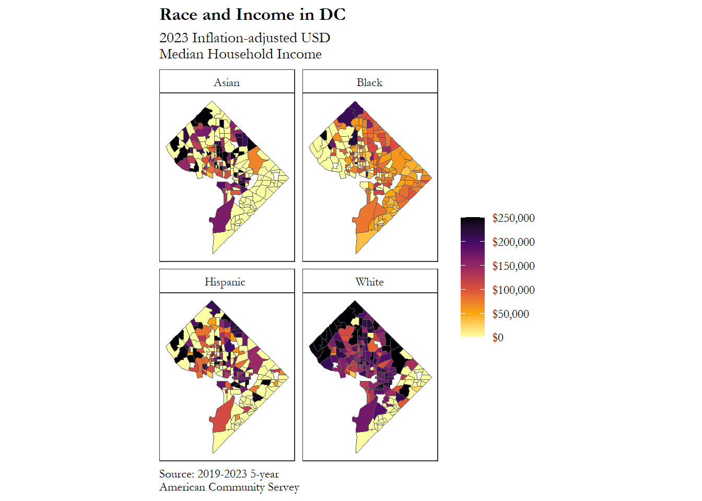

Code
# install.packages(c("tidyverse", "extrafont", "tidycensus", "sf"))
library(tidyverse)
library(tidycensus)
library(extrafont)
library(sf)
extrafont::loadfonts()July 19, 2025
Suppose you need to “pull” U.S. Census data and “run” some summary statistics. Consider this approach.
geom_sf() to plot the map with ggplot2, but this package is part of the geocomputation ecosystem of R.To begin pulling data from the U.S. Census into R, you must submit your email to the Census in order to receive an API key. I have hidden my key for this demo.
Take your key and instantiate it in your R session like so:
To download the data we need (median household income at the tract level of White, Black, Asian and Hispanic residents of DC) we will use get_acs().
dc <-
get_acs(
geography = "tract",
# this could be block, block group, tract, county, etc.
variables = c(
"White" = "B19013A_001",
# white
"Black" = "B19013B_001",
# black
"Asian" = "B19013D_001",
# asian
"Hispanic " = "B19013I_001"
# hispanic
),
# this could be whole plotting and thotting topic on its own...
state = "DC",
# DC counts as a state here
year = 2023,
# I first created this plot when 2022 had the most recent data
geometry = TRUE
# we want to return an sf object (similar to tidy table/tibble that
# also has a geometric component)
) |>
replace_na(list(estimate = 0))
|
| | 0%
|
|=================== | 27%
|
|======================================= | 56%
|
|============================================================== | 89%
|
|======================================================================| 100%Ok, so we know that nobody lives on the National Mall (which is its own census tract), so if we included that row in our map, it’ll be filled in just like the others.
I took the creative liberty to decide to remove all tracts where the value of median household income is 0.
remove <-
dc |>
filter(estimate == 0) |>
# all rows where estimate is 0
group_by(GEOID) |>
# create groups based on the ID of the geometric feature
count() |>
# for each GEOID, how many rows have a 0 in estimate?
filter(n == 4) |>
# all rows where value is 4 (four variables, four zeroes)
pull(GEOID)
# retrieve GEOIDs of tracts we want to remove
dc_clean <-
dc |>
filter(!GEOID %in% remove)We can observe the first few rows of this data to get an idea of what’s going on:
| GEOID | NAME | variable | estimate | moe | geometry |
|---|---|---|---|---|---|
| 11001010300 | Census Tract 103; District of Columbia; District of Columbia | White | 193472 | 45702 | POLYGON ((-77.03636 38.9748... |
| 11001010300 | Census Tract 103; District of Columbia; District of Columbia | Black | 99545 | 53794 | POLYGON ((-77.03636 38.9748... |
| 11001010300 | Census Tract 103; District of Columbia; District of Columbia | Asian | 0 | NA | POLYGON ((-77.03636 38.9748... |
| 11001010300 | Census Tract 103; District of Columbia; District of Columbia | Hispanic | 0 | NA | POLYGON ((-77.03636 38.9748... |
Here are four rows that each refer to Census Tract 103 in the District of Columbia. The variable column describes these rows as containing the median household income by race, while estimate shows the actual value. We can see that the White median household income for Tract 103 was estimated to be $193,333 in 2022; for Black households in that same tract the estimate is $85,758, and for Hispanic households it was $64,233. It appears that there are not enough Asian households in this tract for there to be a reliable estimate.
As mentioned earlier, we will use the geom_sf() function to draw a map within the ggplot framework.
map <-
dc_clean |>
# filter for rows where not GEOID are in remove (GEOID not in remove)
ggplot(aes(fill = estimate)) +
# start ggplot object
geom_sf() +
# apply sf geom
labs(title = "Race and Income in DC",
subtitle = "2023 Inflation-adjusted USD\nMedian Household Income",
caption = "Source: 2019-2023 5-year\nAmerican Community Servey") +
# set title, subtitle and caption (using new line character "\n")
scale_fill_viridis_c(labels = scales::dollar,
option = "inferno",
direction = -1) +
# apply a colorblind-friendly color palette
# we also want dollar signs on our legend
# the "inferno" color palette
# reverse the high/low direction from default
facet_wrap(~ variable, nrow = 2) +
# instead of one DC
# we get four DC's (for each variable, what is being faceted)
# ensure there are 2 rows of plots
theme_bw() +
# black and white theme
theme(panel.grid = element_blank(),
# remove all grid lines (graticules are not necessary here)
axis.text = element_blank(),
# no need for degrees longitude and latitude
axis.ticks = element_blank(),
# ticks also go
legend.title = element_blank(),
# a title for the legend is redundant so it goes as well
strip.background = element_rect(fill = "white"),
# change from grey
legend.spacing.y = unit(.3, "cm"),
# adjust spacing a tiny bit
plot.title = element_text(face = "bold"),
# put the title to bold
text = element_text(family = "Garamond"),
# change font to Garamond
plot.caption = element_text(hjust = 0)
# left adjusted caption
)
map
Now that you’ve successfully plotted Census data on map, you can save the image file to your computer using ggsave() (code sample below):
If you found this tutorial helpful, try this out on your own.
---
title: "Median Income and Race in the District of Columbia"
toc: true
date: "2025-07-19"
description: "Mapping U.S. Census Data with R"
categories: [census, wealth]
image: "images/median_income_by_race_dc_census_tracts.png"
format:
html:
code-fold: true
code-tools: true
execute:
warning: false
message: false
---
Suppose you need to "pull" U.S. Census data and "run" some summary statistics. Consider this approach.
## Packages
- **tidyverse** (ggplot2, dplyr) for plotting and wrangling data
- **sf** (simple features) - I'll only be using one function `geom_sf()` to plot the map with ggplot2, but this package is part of the [geocomputation](https://r.geocompx.org/) ecosystem of R.
- **tidycensus** - an R package by [Kyle Walker](https://walker-data.com/tidycensus/) that allows users to interface with a select number of the US Census Bureau's data APIs and return tidyverse-ready data frames, optionally with simple feature geometry included.
```{r}
#| label: loading package libraries
# install.packages(c("tidyverse", "extrafont", "tidycensus", "sf"))
library(tidyverse)
library(tidycensus)
library(extrafont)
library(sf)
extrafont::loadfonts()
```
## Intiating API Connection
To begin pulling data from the U.S. Census into R, you must submit your email to the Census in order to receive an API key. I have hidden my key for this demo.
```{r}
# my_key <- "my_key"
# extrafont::loadfonts()
```
Take your key and instantiate it in your R session like so:
```{r}
# census_api_key(my_key)
# options(tigris_use_cache = TRUE)
```
## Data Pull
To download the data we need (median household income at the tract level of White, Black, Asian and Hispanic residents of DC) we will use `get_acs()`.
```{r}
dc <-
get_acs(
geography = "tract",
# this could be block, block group, tract, county, etc.
variables = c(
"White" = "B19013A_001",
# white
"Black" = "B19013B_001",
# black
"Asian" = "B19013D_001",
# asian
"Hispanic " = "B19013I_001"
# hispanic
),
# this could be whole plotting and thotting topic on its own...
state = "DC",
# DC counts as a state here
year = 2023,
# I first created this plot when 2022 had the most recent data
geometry = TRUE
# we want to return an sf object (similar to tidy table/tibble that
# also has a geometric component)
) |>
replace_na(list(estimate = 0))
# if it's NA it equals 0 in our situation
```
## Cleaning Data Set
Ok, so we know that nobody lives on the National Mall (which is its own census tract), so if we included that row in our map, it'll be filled in just like the others.
I took the creative liberty to decide to remove all tracts where the value of median household income is 0.
```{r}
remove <-
dc |>
filter(estimate == 0) |>
# all rows where estimate is 0
group_by(GEOID) |>
# create groups based on the ID of the geometric feature
count() |>
# for each GEOID, how many rows have a 0 in estimate?
filter(n == 4) |>
# all rows where value is 4 (four variables, four zeroes)
pull(GEOID)
# retrieve GEOIDs of tracts we want to remove
dc_clean <-
dc |>
filter(!GEOID %in% remove)
```
We can observe the first few rows of this data to get an idea of what's going on:
```{r}
dc_clean |>
head(4) |>
knitr::kable("html") |>
kableExtra::kable_styling(bootstrap_options = c("striped", "hover", "condensed"))
```
Here are four rows that each refer to Census Tract 103 in the District of Columbia. The `variable` column describes these rows as containing the median household income by race, while `estimate` shows the actual value. We can see that the White median household income for Tract 103 was estimated to be \$193,333 in 2022; for Black households in that same tract the estimate is \$85,758, and for Hispanic households it was \$64,233. It appears that there are not enough Asian households in this tract for there to be a reliable estimate.
## Plotting the Map
As mentioned earlier, we will use the `geom_sf()` function to draw a map within the ggplot framework.
```{r}
map <-
dc_clean |>
# filter for rows where not GEOID are in remove (GEOID not in remove)
ggplot(aes(fill = estimate)) +
# start ggplot object
geom_sf() +
# apply sf geom
labs(title = "Race and Income in DC",
subtitle = "2023 Inflation-adjusted USD\nMedian Household Income",
caption = "Source: 2019-2023 5-year\nAmerican Community Servey") +
# set title, subtitle and caption (using new line character "\n")
scale_fill_viridis_c(labels = scales::dollar,
option = "inferno",
direction = -1) +
# apply a colorblind-friendly color palette
# we also want dollar signs on our legend
# the "inferno" color palette
# reverse the high/low direction from default
facet_wrap(~ variable, nrow = 2) +
# instead of one DC
# we get four DC's (for each variable, what is being faceted)
# ensure there are 2 rows of plots
theme_bw() +
# black and white theme
theme(panel.grid = element_blank(),
# remove all grid lines (graticules are not necessary here)
axis.text = element_blank(),
# no need for degrees longitude and latitude
axis.ticks = element_blank(),
# ticks also go
legend.title = element_blank(),
# a title for the legend is redundant so it goes as well
strip.background = element_rect(fill = "white"),
# change from grey
legend.spacing.y = unit(.3, "cm"),
# adjust spacing a tiny bit
plot.title = element_text(face = "bold"),
# put the title to bold
text = element_text(family = "Garamond"),
# change font to Garamond
plot.caption = element_text(hjust = 0)
# left adjusted caption
)
map
```
## Saving Your Map
Now that you've successfully plotted Census data on map, you can save the image file to your computer using `ggsave()` (code sample below):
```{r}
# ggsave("median_income_by_race_dc_census_tracts.png",
# plot = map,
# device = "png",
# width = 6.3,
# height = 4.3,
# unit = "in")
```
If you found this tutorial helpful, try this out on your own.